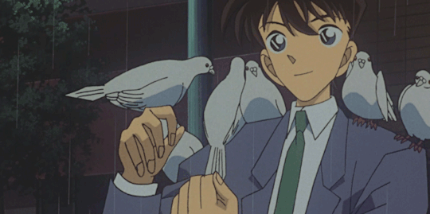
The high school detective who was shrunk by the Black Organization. He uses his brilliant mind to solve cases while hiding his true identity as a child.
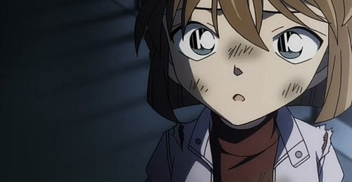
Formerly "Sherry" from the organization and creator of the poison. Now Conan's loyal partner and scientist, living a second life as a child.
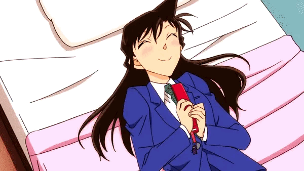
Shinichi's childhood friend and a high school karate champion. She is strong, caring, and the moral compass of the story.
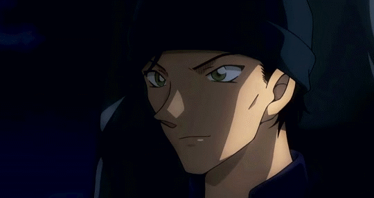
The FBI's legendary sniper. Known as the "Silver Bullet" who has the potential to bring down the Black Organization from within.
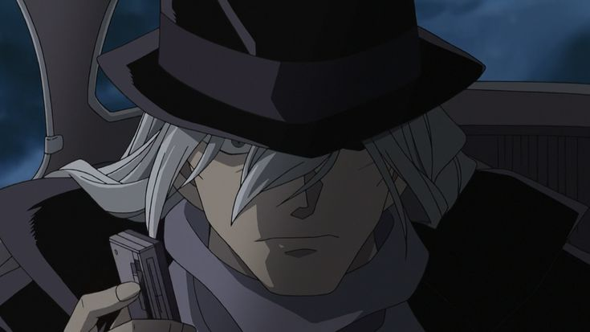
The ruthless, high-ranking executive of the Black Organization. He is a cold-blooded killer and the one who gave Shinichi the poison.
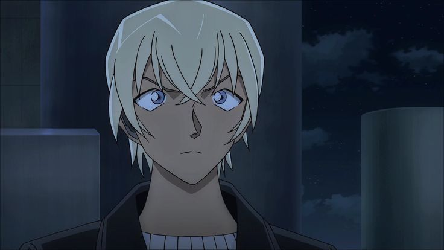
A triple agent working for the Secret Police. He is a master of gathering information and one of the most intelligent members of the cast.
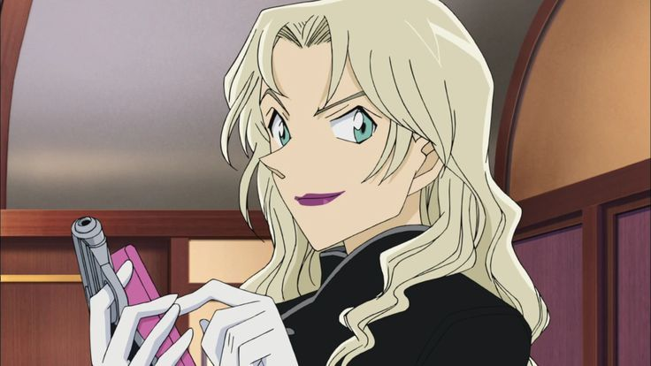
A master of disguise and a favorite of the Organization's boss. She follows her own mysterious agenda and protects Conan's secret.
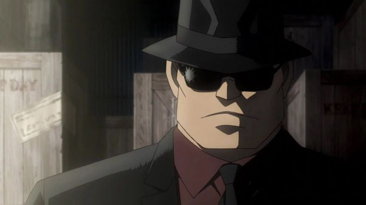
Gin's loyal secretary and partner. He handles the logistical details of the Organization's dark operations.
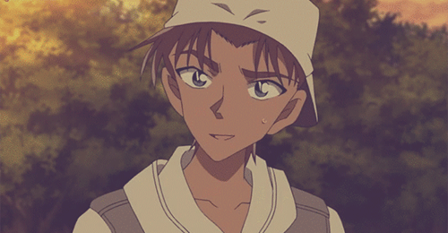
The "Great Detective of the West." He is Shinichi's rival and best friend, being one of the few who know his secret.
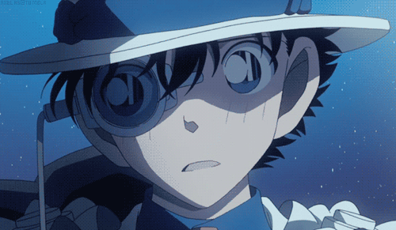
The legendary phantom thief 1412. A master of magic and disguise who is always one step ahead of the police.
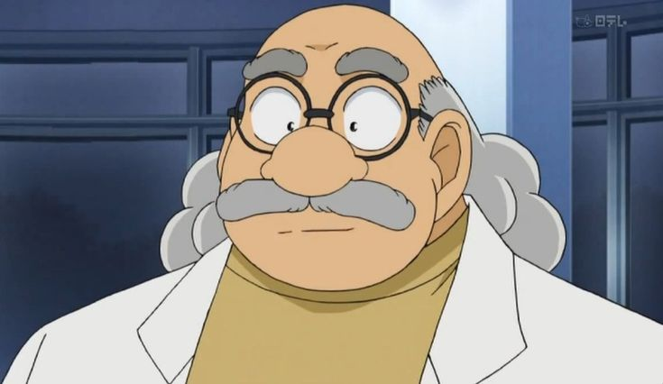
The eccentric inventor who creates all of Conan's gadgets. He is the first person to know the truth and supports Conan like family.
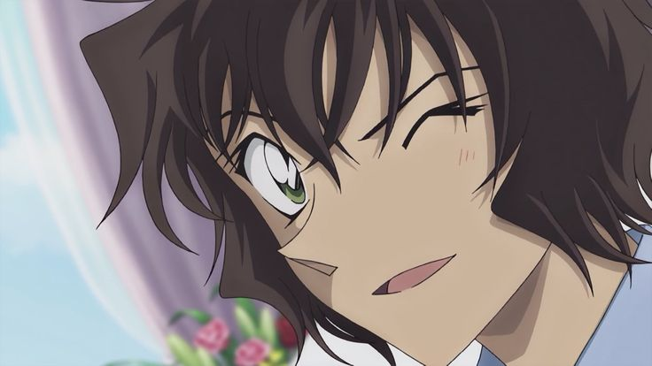
A high school detective and master of Jeet Kune Do. She is Akai's sister and is curious about Conan's true identity.
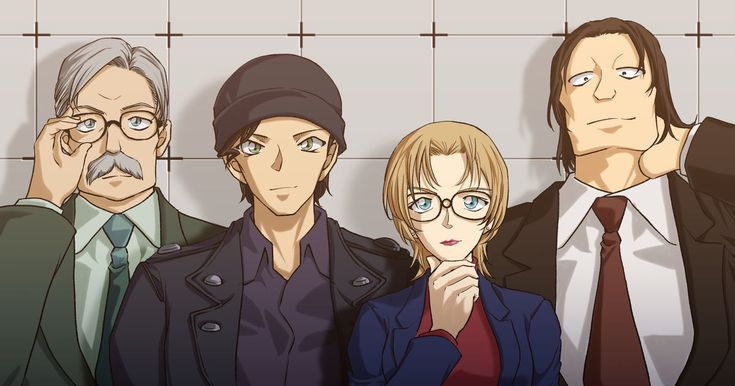
The core members of the FBI team investigating the Black Organization in Japan. They often work with Conan to stop Gin's plans.
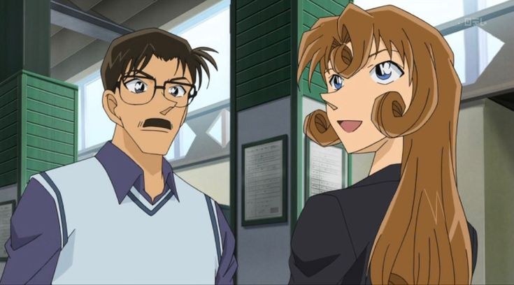
Shinichi's parents. One is a world-class novelist and the other is a legendary actress. They watch over Shinichi from the shadows.
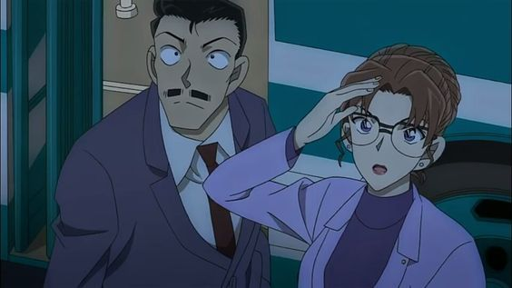
The famous private investigator and the undefeated "Queen of Lawyers." Despite their constant bickering and separation, they share a deep bond and often work together to protect their daughter, Ran, and solve difficult cases.